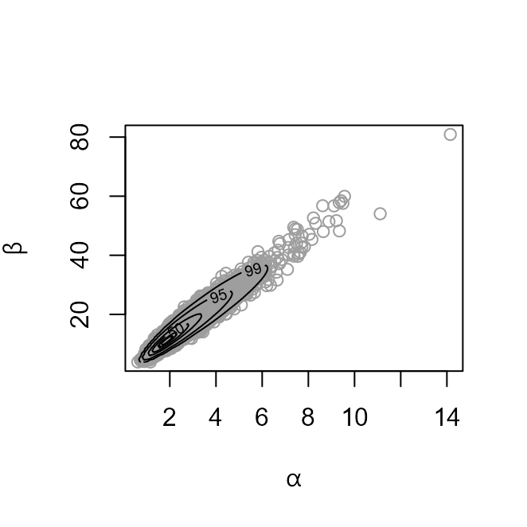
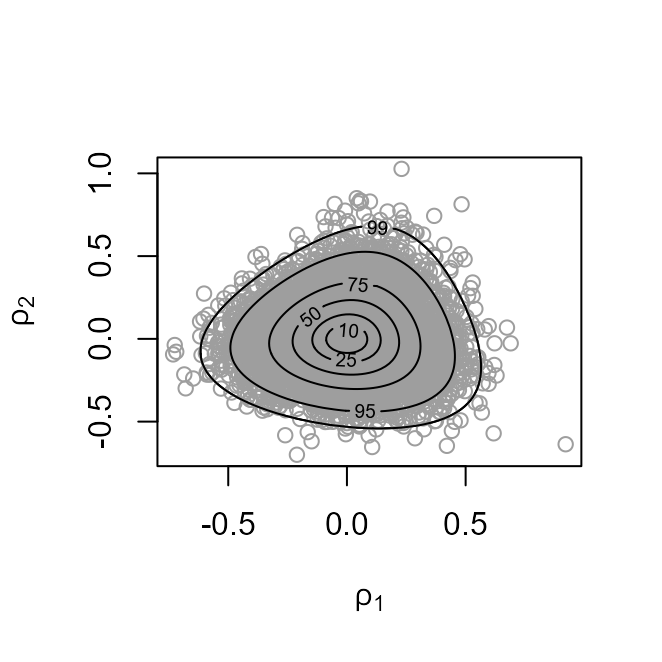

Conjugate Hierarchical Models
Paul Northrop
2025-11-18
Source:vignettes/bang-b-hef-vignette.Rmd
bang-b-hef-vignette.RmdThe bang package simulates from the posterior distributions involved in certain Bayesian models. See the vignette Introducing bang: Bayesian Analysis, No Gibbs for an introduction. In this vignette we consider the Bayesian analysis of certain conjugate hierarchical models. We give only a brief outline of the structure of these models. For a full description see Chapter 5 of Gelman et al. (2014).
Suppose that, for \(j = 1, \ldots, J\), experiment \(j\) of \(J\) experiments yields a data vector \(Y_j\) and associated parameter vector \(\theta_j\). Conditional on \(\theta_j\) the data \(Y_j\) are assumed to follow independent response distributions from the exponential family of probability distributions. A prior distribution \(\pi(\theta_j \mid \phi)\) is placed on each of the population parameters \(\theta_1, \ldots, \theta_J\), where \(\phi\) is a vector of hyperparameters. For mathematical convenience \(\pi(\theta_j \mid \phi)\) is selected to be conditionally conjugate, that is, conditionally on \(\phi\) the posterior distribution of \(\theta_j\) of the same type as \(\pi(\theta_j \mid \phi)\).
Use of a conditionally conjugate prior means that it is possible to
derive, and simulate from, the marginal posterior density \(\pi(\phi \mid \boldsymbol{\mathbf{y}})\).
The hef function does this using the generalized
ratio-of-uniforms method, implemented by the function ru in
the rust package (Northrop
2017)). By default a model-specific transformation of the
parameter vector \(\phi\) is used to
improve efficiency. See the documentation of hef and the
two examples below for details. Simulation from the full posterior
density \(\pi(\boldsymbol{\mathbf{\theta}},
\phi \mid \boldsymbol{\mathbf{y}}) = \pi(\boldsymbol{\mathbf{\theta}}
\mid \phi, \boldsymbol{\mathbf{y}}) \pi(\phi \mid
\boldsymbol{\mathbf{y}})\) follows directly because conditional
conjugacy means that it is simple to simulate from \(\pi(\boldsymbol{\mathbf{\theta}} \mid \phi,
\boldsymbol{\mathbf{y}})\), given the values simulated from \(\pi(\phi \mid \boldsymbol{\mathbf{y}})\).
The simulation is performed in the function hef.
Beta-binomial model
We consider the example presented in Section 5.3 of Gelman et al. (2014), in which the data (Tarone 1982) in the matrix rat are
analysed. These data contain information about an experiment in which,
for each of 71 groups of rats, the total number of rats in the group and
the numbers of rats who develop a tumor is recorded, so that \(J = 71\). Conditional on \(\boldsymbol{\mathbf{\theta}} = (\theta_1, \ldots,
\theta_J) = (p_1, \ldots, p_J)\) we assume independent binomial
distributions for \((Y_1, \ldots,
Y_J)\), that is, \(Y_j \sim {\rm
binomial}(n_j, p_j)\). We use the conditionally conjugate priors
\(p_j \sim {\rm Beta}(\alpha, \beta)\),
so that \(\phi = (\alpha, \beta)\).
The conditional conjagacy of the priors means that the marginal posterior of \((\alpha, \beta)\) given \(\boldsymbol{\mathbf{y}} = (y_1, \ldots, y_J)\) can be determined (equation (5.8) of Gelman et al. (2014)) as \[ \pi(\alpha, \beta \mid \boldsymbol{\mathbf{y}}) \propto \pi(\alpha, \beta) \prod_{j=1}^J \frac{B(\alpha + y_j, \beta + n_j - y_j)}{B(\alpha, \beta)}, \] where \(\pi(\alpha, \beta)\) is the hyperprior density for \((\alpha, \beta)\). By default \(\phi = (\alpha, \beta)\) is transformed prior to sampling using \((\rho_1, \rho_2)=(\log (\alpha/\beta), \log (\alpha+\beta))\). The aim of this is to improve efficiency by rotating and scaling the (mode-relocated) conditional posterior density in an attempt to produce near circularity of this density’s contours.
To simulate from the full posterior density \(\pi(\boldsymbol{\mathbf{\theta}}, \alpha, \beta \mid \boldsymbol{\mathbf{y}}) = \pi(\boldsymbol{\mathbf{\theta}} \mid \alpha, \beta, \boldsymbol{\mathbf{y}}) \pi(\alpha, \beta \mid \boldsymbol{\mathbf{y}})\) we first sample from \(\pi(\alpha, \beta \mid \boldsymbol{\mathbf{y}})\). Simulation from the conditional posterior distribution of \(\boldsymbol{\mathbf{\theta}}\) given \((\alpha, \beta, \boldsymbol{\mathbf{y}})\) is then straightforward on noting that \[ \theta_j \mid \alpha, \beta, y_j \sim {\rm beta}(\alpha + y_j, \beta + n_j - y_j) \] and that \(\theta_j, j = 1, \ldots, J\) are conditionally independent.
The hyperprior for \((\alpha,
\beta)\) used by default in hef is \(\pi(\alpha, \beta) \propto (\alpha+\beta)^{-5/2},
\alpha>0, \beta>0\), following Section 5.3 of Gelman et al. (2014). A user-defined prior may
be set using set_user_prior.
library(bang)
# Default prior, sampling on (rotated) (logit(mean), log(alpha + beta)) scale
rat_res <- hef(model = "beta_binom", data = rat, n = 10000)
plot(rat_res)
plot(rat_res, ru_scale = TRUE)
The plot on the left shows the values sampled from the posterior distribution of \((\alpha, \beta)\) with superimposed density contours. On the right is a similar plot displayed on the scale used for sampling, that is, \((\rho_1, \rho_2)\).
The following summary is of properties of the generalized ratio-of uniforms algorithm, in particular the probability of acceptance, and summary statistics of the posterior sample of \((\alpha, \beta)\).
summary(rat_res)
#> ru bounding box:
#> box vals1 vals2 conv
#> a 1.0000000 0.00000000 0.00000000 0
#> b1minus -0.2382163 -0.40313465 -0.03906169 0
#> b2minus -0.2174510 0.05447431 -0.35297538 0
#> b1plus 0.2231876 0.36718395 -0.06551365 0
#> b2plus 0.2512577 0.05665707 0.44459818 0
#>
#> estimated probability of acceptance:
#> [1] 0.5258729
#>
#> sample summary
#> alpha beta
#> Min. : 0.6152 Min. : 3.883
#> 1st Qu.: 1.7895 1st Qu.:10.675
#> Median : 2.2198 Median :13.329
#> Mean : 2.4050 Mean :14.341
#> 3rd Qu.: 2.8034 3rd Qu.:16.830
#> Max. :14.1474 Max. :80.895Gamma-Poisson Model
We perform a fully Bayesian analysis of an empirical Bayesian example
presented in Section 4.2 of Gelfand and Smith
(1990), who fix the hyperparameter \(\alpha\) described below at a point
estimate derived from the data. The pump dataset (Gaver and O’Muircheartaigh 1987) is a matrix in
which each row gives information about one of 10 different pump systems.
The first column contains the number of pump failures. The second column
contains the length of operating time, in thousands of hours.
pump
#> failures time
#> [1,] 5 94.320
#> [2,] 1 15.720
#> [3,] 5 62.880
#> [4,] 14 125.760
#> [5,] 3 5.240
#> [6,] 19 31.440
#> [7,] 1 1.048
#> [8,] 1 1.048
#> [9,] 4 2.096
#> [10,] 22 10.480The general setup is similar to the beta-binomial model described above but now the response distribution is taken to be Poisson, the prior distribution is gamma and \(J = 10\). For \(j = 1, \ldots, J\) let \(Y_j\) denote the number of failures and \(e_j\) the length of operating time for pump system \(j\). Conditional on \(\boldsymbol{\mathbf{\lambda}} = (\lambda_1, \ldots, \lambda_J)\) we assume independent Poisson distributions for \((Y_1, \ldots, Y_J)\) with means that are proportional to the exposure time \(e_j\), that is, \(Y_j \sim {\rm Poisson}(e_j \lambda_j)\). We use the conditionally conjugate priors \(\lambda_j \sim {\rm gamma}(\alpha, \beta)\), so that \(\phi = (\alpha, \beta)\). We use the parameterization where \(\beta\) is a rate parameter, so that \({\rm E}(\lambda_j) = \alpha/\beta\) a priori.
The marginal posterior of \((\alpha, \beta)\) given \(\boldsymbol{\mathbf{y}} = (y_1, \ldots, y_J)\) can be determined as \[ \pi(\alpha, \beta \mid \boldsymbol{\mathbf{y}}) \propto \pi(\alpha, \beta) \prod_{j=1}^J \frac{\beta^\alpha\Gamma(\alpha + y_j)}{(\beta+e_j)^{\alpha+y_j} \Gamma(\alpha)}, \] where \(\pi(\alpha, \beta)\) is the hyperprior density for \((\alpha, \beta)\). The scale used for sampling is \((\rho_1, \rho_2)=(\log (\alpha/\beta), \log \beta))\).
To simulate from the full posterior \(\pi(\boldsymbol{\mathbf{\lambda}}, \alpha, \beta \mid \boldsymbol{\mathbf{y}}) = \pi(\boldsymbol{\mathbf{\lambda}} \mid \alpha, \beta, \boldsymbol{\mathbf{y}}) \pi(\alpha, \beta \mid \boldsymbol{\mathbf{y}})\) we first sample from \(\pi(\alpha, \beta \mid \boldsymbol{\mathbf{y}})\) and then note that \[ \lambda_j \mid \alpha, \beta, y_j \sim {\rm gamma}(\alpha + y_j, \beta + e_j) \] and that \(\lambda_j, j = 1, \ldots, J\) are conditionally independent.
By default hef takes \(\alpha\) and \(\beta\) to be independent gamma random
variables a priori. The parameters of these gamma distributions
can be set by the user, using the argument hpars or a
different prior may be set using set_user_prior.
We produce similar output to the beta-binomial example above.
pump_res <- hef(model = "gamma_pois", data = pump, hpars = c(1, 0.01, 1, 0.01))
plot(pump_res)
plot(pump_res, ru_scale = TRUE)
summary(pump_res)
#> ru bounding box:
#> box vals1 vals2 conv
#> a 1.0000000 0.00000000 0.00000000 0
#> b1minus -0.5174980 -0.91869101 -0.06060116 0
#> b2minus -0.5150835 0.15757254 -0.92429417 0
#> b1plus 0.4124640 0.65433383 -0.11046433 0
#> b2plus 0.4224941 0.08788857 0.67847965 0
#>
#> estimated probability of acceptance:
#> [1] 0.5094244
#>
#> sample summary
#> alpha beta
#> Min. :0.2007 Min. :0.08544
#> 1st Qu.:0.8185 1st Qu.:1.29559
#> Median :1.0598 Median :1.94558
#> Mean :1.1496 Mean :2.16025
#> 3rd Qu.:1.3915 3rd Qu.:2.73560
#> Max. :3.6629 Max. :9.28544